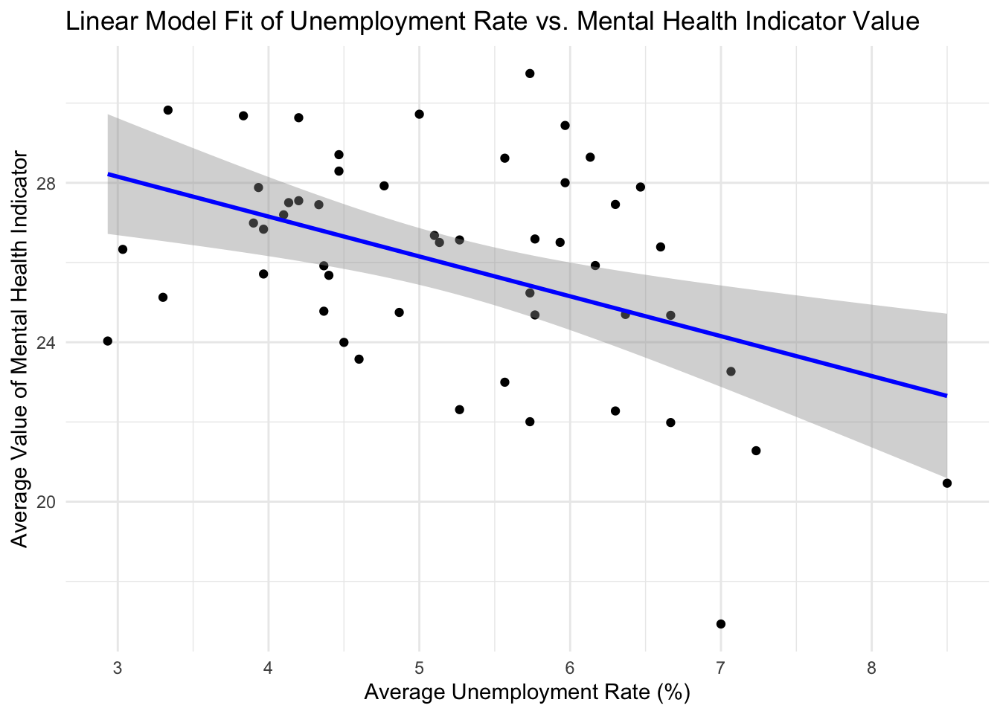
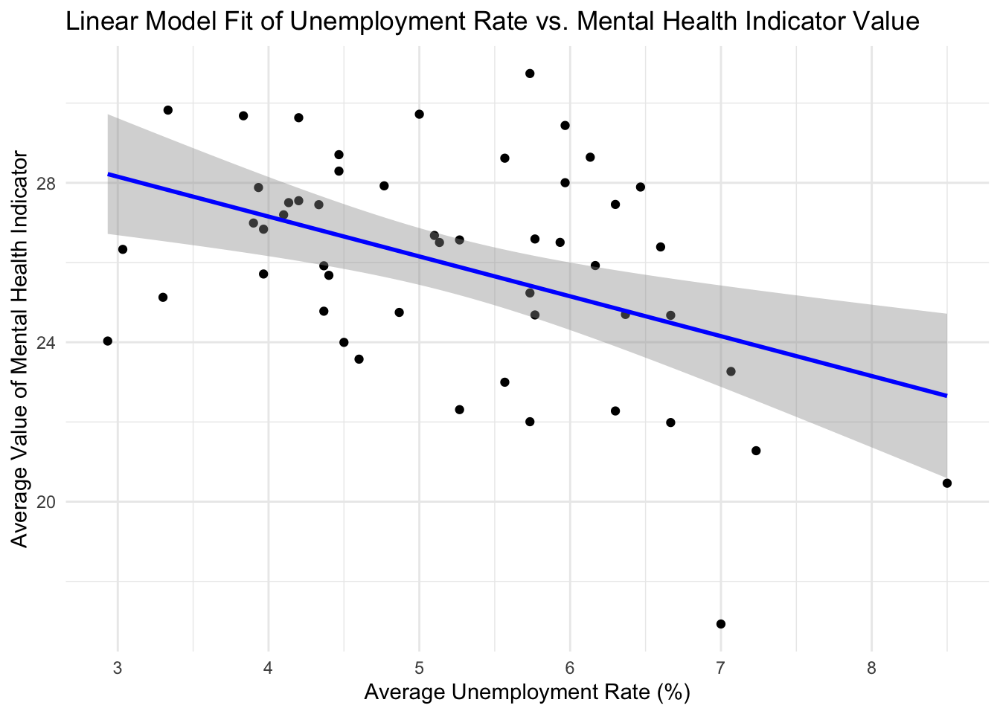
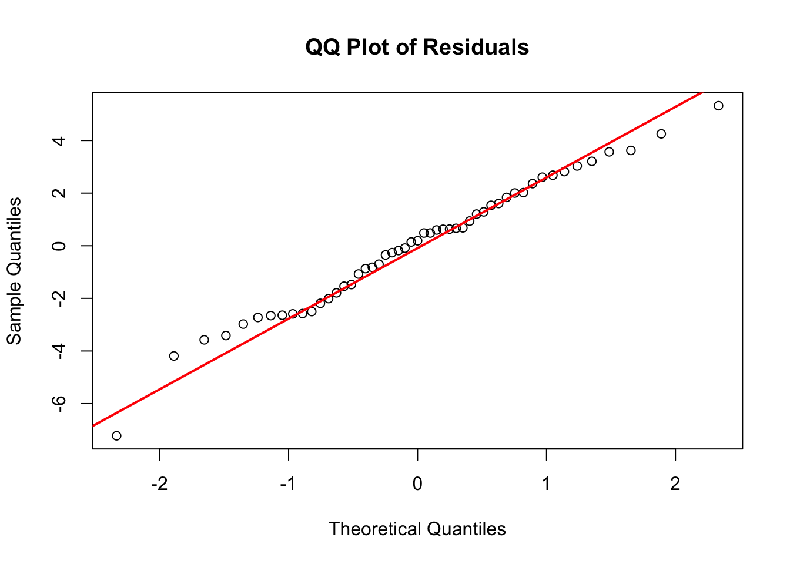

Attaching package: 'dplyr'The following objects are masked from 'package:stats':
filter, lagThe following objects are masked from 'package:base':
intersect, setdiff, setequal, union`geom_smooth()` using formula = 'y ~ x'
The COVID-19 pandemic has had a profound impact on global health and economic stability, touching all aspects of life, including mental well-being. Given the widespread changes and challenges, there has been a renewed focus on mental health, particularly as it relates to economic stresses like unemployment. This analysis aims to explore the complex relationship between unemployment and mental health during these challenging times.
The primary variables of interest in this analysis are:
Unemployment Rate: Measured monthly or annually, it reflects the percentage of the labor force that is jobless and actively seeking employment. Mental Health Metrics: This could include data on the prevalence of mental health conditions, rates of mental health service utilization, and frequencies of mental health-related symptoms reported by different demographics. Demographic Information: Including age and gender, which may influence how unemployment impacts mental health. The key relationship we are most interested in examining is the correlation between rising unemployment rates and changes in mental health status among different demographic groups.
This analysis seeks to answer the following questions:
How has the unemployment rate influenced mental health conditions during the pandemic years? Are there significant differences in mental health across different age groups and genders? Has there been an increase in the use of mental health services correlating with changes in the unemployment rate?
Attaching package: 'dplyr'The following objects are masked from 'package:stats':
filter, lagThe following objects are masked from 'package:base':
intersect, setdiff, setequal, union`geom_smooth()` using formula = 'y ~ x'
| Coefficients | estimate | std.error | t value | Pr(> |
|---|---|---|---|---|
| intercept | 31.1540 | 1.5574 | 20.004 | < 2e-16 *** |
| Average_Unemployment | -1.0002 | 0.2921 | -3.424 | 0.00126 ** |
\(Signif. codes: 0 ‘***’ 0.001 ‘**’ 0.01 ‘*’ 0.05 ‘.’ 0.1 ‘ ’ 1\)
| stat | value |
|---|---|
| Multiple R-squared | 0.1931 |
| Adjusted R-squared | 0.1766 |
| F-statistic | 11.72 |
| p-value | 0.001256 |
| Residuals | value |
|---|---|
| Min | -7.222 |
| 1Q | -1.899 |
| median | 0.190 |
| 3Q | 1.723 |
| Max | 5.323 |
based on the model included 51 observation, we can see the unemployment rate adn the value is linearly correlated, with one increase in percentage of the average unemployment rate, there expected to be 1 decrease in the value, which indicate that higher unemployment rate will result in better(lower) mental health value
`geom_smooth()` using formula = 'y ~ x'

quartz_off_screen
2 | Coefficients | estimate | std.error | t value | Pr(> |
|---|---|---|---|---|
| intercept | 3.47042 | 0.06330 | 54.822 | < 2e-16 *** |
| Average_Unemployment | -0.04233 | 0.01187 | -3.565 | 0.000823 *** |
\(Signif. codes: 0 ‘***’ 0.001 ‘**’ 0.01 ‘*’ 0.05 ‘.’ 0.1 ‘ ’ 1\)
| stat | value |
|---|---|
| Multiple R-squared | 0.206 |
| Adjusted R-squared | 0.1898 |
| F-statistic | 12.71 |
| p-value | 0.0008228 |
| Residuals | value |
|---|---|
| Min | -0.34497 |
| 1Q | -0.07343 |
| median | 0.01763 |
| 3Q | 0.06367 |
| Max | 0.19794 |
based on the plot and summary of the model, log-level models seems work better than level-level model, so we do more advanced check on this model. it indicated that one percent in crease in unemployment rate will cause the value decrease by 0.04233%. Also, we graph the qq plot, and see most of the point are around the line, indicated that most the residual is approximatelly normally distributed.